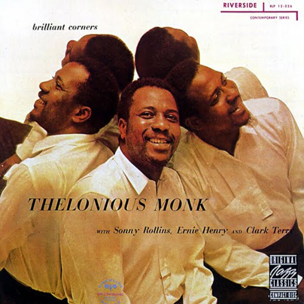
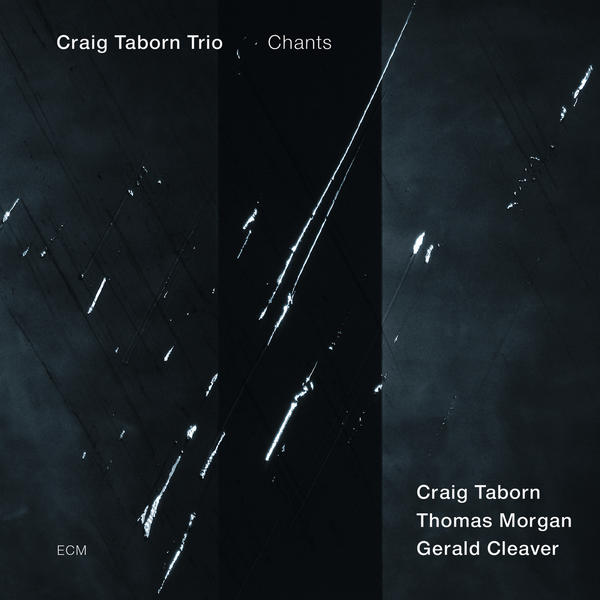
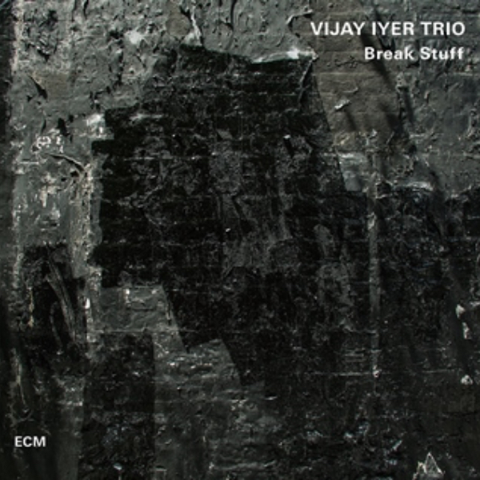

I am a jazz/improvisational pianist. I graduated from Yale in 2016 with a degree in History, where I wrote my thesis on the history of jazz in the Soviet Union. From there, I moved to London, where I worked for an international women's rights law firm and continued my music performance career. I am learning to code because I am interested in the music tech space and because it is a creative way to pursue a career that intersects well with my artistic passion.
|  |
Thelonious MonkNica was a beloved figure among jazz musicians, especially those who benefited from her patronage. More than 20 songs have been written about her – Nica’s Dream, Thelonica, Blues for Nica, Tonica, Nica Steps Out… but the best belong to Monk. Suitably, his crowning achievement is Pannonica, from his thorny masterpiece “Brilliant Corners.” It features Rollins on sax and Monk on celeste – an odd choice for jazz, but maybe the perfect instrument to capture the essence of a name that Nica’s eccentric father first gave to a new species of butterfly. |
|  |
Craig Taborn TrioChants is a piano trio album by American jazz pianist and composer Craig Taborn, recorded in June 2012 and released on the ECM label. It features Taborn on piano, with Thomas Morgan on bass, and Gerald Cleaver on drums. The album was recorded in New York City. The compositions were written by Taborn for the band over their eight years of existence. |
|  |
Vijay Iyer TrioThom Jurek in his review for All Music says that "This trio aims at an interior center, finds it, and pushes out, projecting Iyer & Co.'s discoveries." In The Guardian, John Fordham gave this album four stars out of five, saying says that "Iyer, bassist Stephan Crump and drummer Marcus Gilmore sound joined at the hip even when sometimes seeming to be investigating completely different tunes, but almost everything here feels just as jazz-rooted as the three classic covers on the tracklist. |